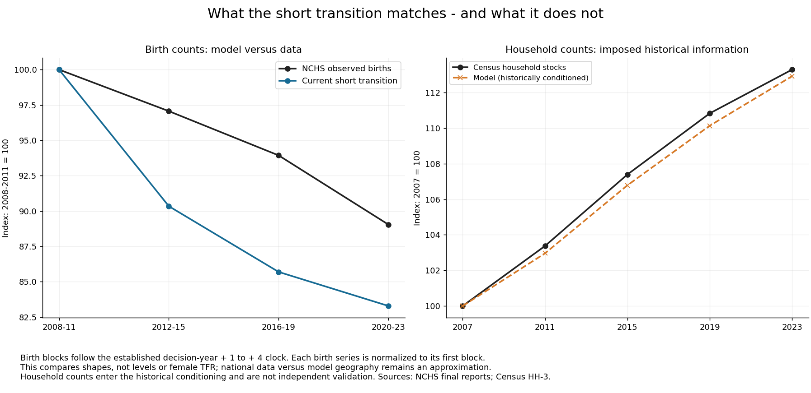
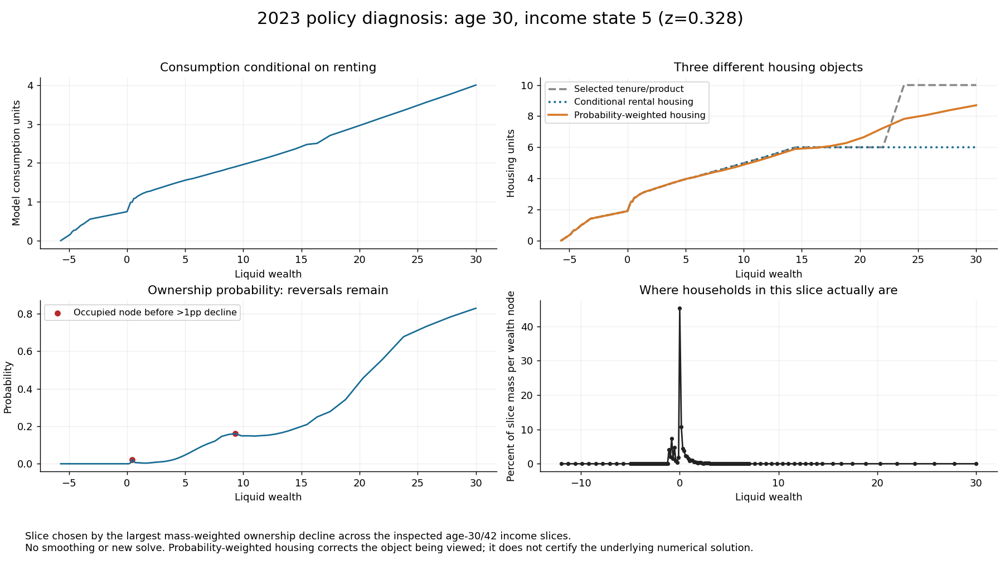

The six-date transition clears housing and pension accounts. Its preference path is illustrative and its terminal horizon is not certified. The old/new stationary comparison fixes parameters and preferences; it is not a matched 2023 recalibration.
Open the 16-page PDF · First page: the tester. Full target and parameter tables follow.
Read this page first on every update. PASS refers only to the named check and experiment; unresolved checks cannot become green because a solver converged.
| Check | Success means | Current result |
|---|---|---|
| Pension accounts | Balance at every solved date under the pinned fiscal gate. | PASS; max scaled residual 3.34e-10 |
| Housing equilibrium | Demand equals supply under the pinned market gate. | PASS; max relative residual 3.56e-05 |
| Reproducibility | Saved mapping replays and checkpoint reloads correctly. | PASS |
| Calibration fit | Every target and parameter visible; economically material misses resolved or explicitly assessed. | NEEDS WORK; complete tables follow. A small total loss alone is insufficient. |
| 2023 utility comparison | Old and new each recalibrated to the same 2023 targets, fiscal closure and numerical gates. | MISSING; current stationary tests freeze parameters and final preference. |
| Policy functions | Feasible choices and probabilities; occupied reversals explained and sensitive states checked under numerical refinement. | OPEN; plotting objects clarified. Global policy accuracy is not certified. |
| Historical transition | Correctly timed, comparable data overlays; shock estimated; observed and imposed moments distinguished. | NEEDS WORK; birth-count shape misses. Household path is conditioned on data. |
| Terminal horizon | Approved tail checks pass and the dates of interest remain stable when the horizon is extended. | NOT PASSED |
| Policy readiness | All above resolved, with approved population, entry, fiscal and geographic closure. | NOT READY |
Maintained sequential fertility architecture. Old utility has a per-child housing floor; new utility has an equivalence scale and a first-dependent housing floor. Both retain linear child reward. All cases below balance pensions.
| Experiment | What was varied / targeted | Interpretation |
|---|---|---|
| Early stationary candidate | New utility; early-period working targets; fertility normalized to 2.1. | Loss 1180.225. Candidate, not certified SMM. |
| Static old / new, late preference | Same structural parameters, final preference and housing supply; balanced pensions. | Losses 1335.720 / 1361.330. Neither recalibrated. |
| Six-date historical diagnostic | New utility; illustrative announced preference path, 2007-2027. | Converged finite path. Neither fitted history nor horizon-certified policy benchmark. |
Working objective = 1180.225; 12 scored restrictions plus separate fertility normalization. Nine structural coordinates; the preference intercept normalizes fertility. Shaded losses exceed 4 (gap exceeds 2 objective scales): a review screen, not a confidence test; some scales are synthetic. Not certified SMM.
| Moment | Target | Model | Gap | Weight | Loss |
|---|---|---|---|---|---|
| Initial model completed fertility | 2.1 | 2.1 | 2.5234e-05 | -- | -- |
| Childless women, ages 40-44 | 0.19828 | 0.19079 | -0.0074894 | 35532 | 1.993 |
| Exactly one child among mothers, ages 40-44 | 0.21366 | 0.22038 | 0.006729 | 26953 | 1.2204 |
| Period mean first-birth age | 25.976 | 26.314 | 0.33767 | 139.83 | 15.944 |
| First births at age 30+ | 0.24928 | 0.24821 | -0.0010698 | 13866 | 0.015868 |
| Wealth / annual gross labor earnings | 6.1459 | 5.9809 | -0.16494 | 7.5951 | 0.20663 |
| Annual bequests / aggregate wealth | 0.0088 | 0.011453 | 0.0026526 | 5.1653e+06 | 36.343 |
| Old wealth/income p90 / median, ages 76-84 | 3.5159 | 3.9569 | 0.44099 | 10.616 | 2.0646 |
| Mean occupied rooms, capped at 9 | 5.5611 | 5.9204 | 0.3593 | 128.02 | 16.527 |
| Ownership, heads 30-55 | 0.64833 | 0.60481 | -0.043527 | 2339.4 | 4.4322 |
| First-birth room response, -1 to +3 | 0.72025 | 0.52856 | -0.19169 | 137.57 | 5.0546 |
| Rooms: 3+ versus 1-2 resident children (model dependent proxy) | 0.34707 | 0.1864 | -0.16067 | 280.53 | 7.2415 |
| Recent-parent ownership gap | 0.1629 | -0.037746 | -0.20064 | 27056 | 1089.2 |
Diagnostic losses = 1335.720 / 1361.330. Fertility near 1.40 is the stationary outcome at the retained final preference, not a recalibrated 2023 fit. Shading flags gaps exceeding 2 objective scales, not statistical rejection. Targets differ from the early system; do not compare these losses to its loss.
| Moment | Target | Old | New | Old gap | New gap | Weight | Old loss | New loss |
|---|---|---|---|---|---|---|---|---|
| Completed-fertility measure | 1.918 | 1.4 | 1.4092 | -0.51801 | -0.50875 | 1425.7 | 382.58 | 369.03 |
| Childlessness | 0.188 | 0.33434 | 0.33219 | 0.14634 | 0.14419 | 17181 | 367.93 | 357.21 |
| Mean age at first birth | 26.045 | 28.634 | 28.606 | 2.589 | 2.5618 | 44.444 | 297.91 | 291.68 |
| First births at 30+ | 0.26033 | 0.38364 | 0.38211 | 0.12331 | 0.12178 | 10000 | 152.06 | 148.31 |
| First-birth room response | 0.72025 | 0.3617 | 0.35744 | -0.35854 | -0.3628 | 137.57 | 17.684 | 18.107 |
| Rooms: 3+ vs 1-2 children | 0.3677 | 0.38386 | 0.23114 | 0.01616 | -0.13656 | 2958.5 | 0.77256 | 55.168 |
| Parent ownership gap (old definition) | 0.16766 | 0.11335 | 0.1103 | -0.054308 | -0.057358 | 14230 | 41.968 | 46.815 |
| Ownership (old definition) | 0.57547 | 0.5884 | 0.58892 | 0.012925 | 0.01345 | 1207.8 | 0.20178 | 0.2185 |
| Mean occupied rooms | 5.78 | 6.448 | 6.4438 | 0.66802 | 0.66378 | 11.973 | 5.343 | 5.2755 |
| Wealth / annual labor earnings | 6.8731 | 6.2095 | 6.2092 | -0.66356 | -0.66387 | 6.2877 | 2.7685 | 2.7711 |
| Annual bequests / wealth | 0.0088 | 0.012327 | 0.012332 | 0.0035269 | 0.0035315 | 5.1653e+06 | 64.252 | 64.419 |
| Old wealth/income: p90 / median | 3.4481 | 3.6463 | 3.6504 | 0.19819 | 0.20226 | 56.96 | 2.2374 | 2.3301 |
Static columns are inherited, fixed diagnostic inputs. Early estimates are provisional. Bound proximity follows the saved search flags. Pension amount is an endogenous budget outcome; annual beta is raised to the fourth power in four-year periods.
| Parameter | Static old | Static new | Early candidate | Range / restriction | Near bound? |
|---|---|---|---|---|---|
| beta_annual | 0.99528 | 0.99528 | 0.99545 | [0.94, 0.9995] | No / fixed |
| kappa_fert | 2.1682 | 2.1682 | 1.8057 | [0.02, 50] | No / fixed |
| kappa_fert_continuation | 1.7708 | 1.7708 | 1.6254 | [0.02, 50] | No / fixed |
| chi | 1.0537 | 1.0537 | 1.075 | [0.1, 5] | No / fixed |
| H0 | 8.4348 | 8.4348 | 7.4778 | [0.2, 80] | No / fixed |
| theta0 | 0.57035 | 0.57035 | 0.44419 | [0, 8] | No / fixed |
| theta1 | 0.10372 | 0.10372 | 0.11955 | [0.02, 16] | Yes: theta1, all three |
| first_birth_fixed_cost | 4.6197 | 4.6197 | 4.4745 | [0, 8] | No / fixed |
| h_P | 0.71685 | 0.71685 | 0.92045 | New [0.10,2.30]; old = jump + slope | No / fixed |
| hbar_child_rooms | 0.24708 | 0 | 0 | Old [0.10,1.80]; new fixed at zero | No / fixed |
| psi_child | -0.032 | -0.032 | 0.29349 | Fixed in static tests; early normalized to 2.1 | No / fixed |
| payroll_tax | 0.179 | 0.179 | 0.179 | externally fixed | No / fixed |
| pension_period | 2.0464 | 2.0464 | 2.0464 | Derived from payroll budget | No / fixed |
| housing_supply_elasticity | 0.63 | 0.63 | 0.63 | externally fixed | No / fixed |
| tenure_choice_kappa | 0.005 | 0.005 | 0.005 | externally fixed | No / fixed |
| alpha_cons | 0.733 | 0.733 | 0.733 | externally fixed | No / fixed |
| sigma | 2 | 2 | 2 | externally fixed | No / fixed |
| Old first-child jump | 0.46977 | -- | -- | Old [0,0.5]; new uses h_P | No |

Housing prices, rents, ownership and housing-quantity historical overlays with aligned geography and samples remain outstanding.

Conditional renter consumption and selected tenure housing are different conditional objects. Probability-weighted physical housing clarifies the graph. This does not resolve all ownership reversals. A prior independent audit verified one stationary reversal only; it is not certification of these transition policies.


These are fixed-parameter diagnostics. Complete old target/weight tables and parameter restrictions:


All original plots retain their original filenames, data and bytes. No model solve is performed to build this review.